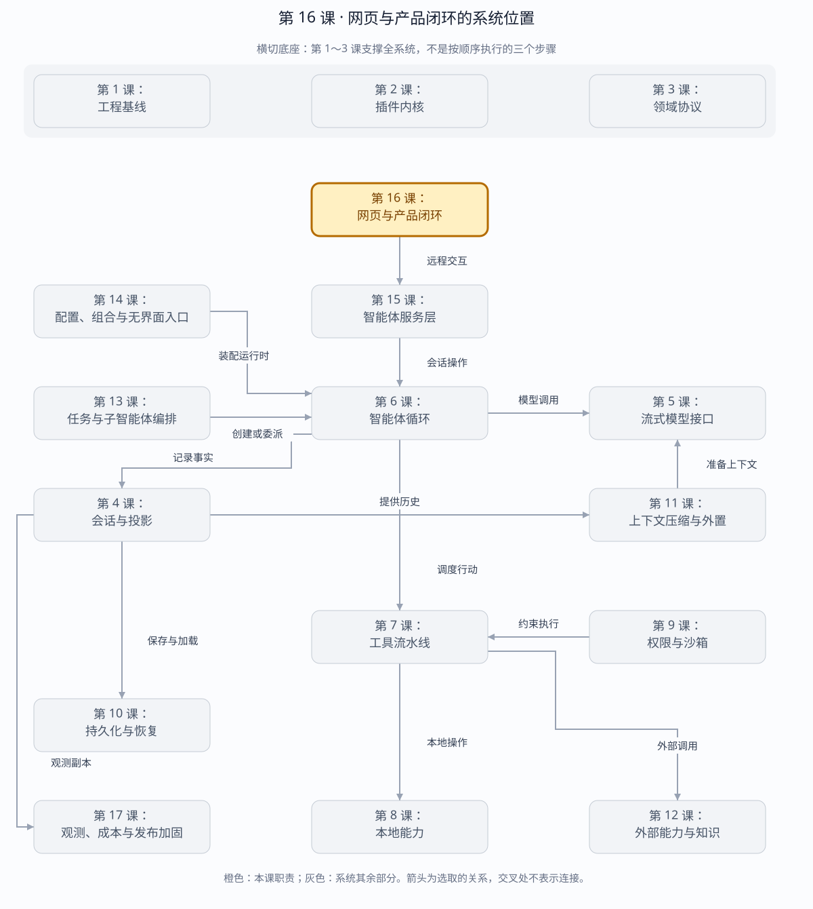

第 16 课：Web Client 与生产闭环
浏览器不是恢复源。可靠 Web Client 先取权威 snapshot，再用 Session seq 追尾事件；断线只丢连接，不丢会话语义。
章节概览（可选）：三框架职责摘要
本章对比：DeepSeek Harness / DeepAgents / OpenHands
口径：DeepSeek 依据本地原仓库（99f6f02fecdb），不是 harness-lab；deepagent 按 LangChain DeepAgents 理解；OpenHands 对比当前 Software Agent SDK，不混用旧 V0。在线资料核对于 2026-08-28，描述文档能力，不代表已在本实验室安装或测试。没有依据的同名能力不强行等同。
三者的关键区别：产品闭环的关键是让界面忠实消费状态与操作结果，而不是再实现一套独立的 agent 状态机。（基于上述依据的归纳）
本章在全系统中的位置
系统最外层，把远程会话投影变成可操作界面。
下面是本课程的概念地图，不是某框架的逐包调用图，也不表示实验室已默认装配全部能力。三套框架的实际对应关系见上方横向对比表。
全系统定位 · 橙色高亮第 16 课
打开大图 · Mermaid 图源
| 上游与输入 | 用户操作、服务端历史、事件流与连接变化。 |
|---|
| 下游与输出 | 消息与工具卡片、审批入口、状态反馈，以及发回服务层的操作。 |
|---|
| 不归本章负责 | 浏览器展示态不是执行事实；前端重连不能擅自重复提交有副作用的任务。 |
|---|
| 放进具体场景 | 工具仍在执行时刷新页面，前端应恢复历史与当前状态，不再发一次同样的工具请求。 |
|---|
接着看下方「可视化图解」：局部模块图解释职责，时序图解释一次调用，分支图解释异常与边界。
本课导览
| 包含内容 | 客户端投影、快照与追尾、命令调用、审批交互、附件上传、鉴权和网页安全头。 |
|---|
| 涉及模块 | AgentClient、ClientProjection、Web 静态客户端、交互中介器、附件接口。 |
|---|
| 白话解释 | 网页先拿完整账本快照，再只接收后续新事件；页面关掉或网络断开都不会成为数据丢失点。 |
|---|
| 解决的问题 | 构建可断线恢复的浏览器体验，并闭合消息、审批和附件从界面到服务端再到会话日志的链路。 |
|---|
点击下面的概念名称，可直达该概念的三框架实现、区别与依据。原有能力清单、示例和验收描述面向 harness-lab 教学实现；不要将其直接当作上游框架能力声明。
完整能力清单
| 能力 | 完整行为 | 一致性规则 |
|---|
| 客户端投影 | 从会话事件重建消息、用量、生命周期和模型可见面替换。 | 严格检查序号；重复事件幂等，缺口明确失败。 |
| 快照初始化 | 通过 RPC 获取权威快照并一次性重置客户端投影。 | 浏览器本地状态不作为恢复源。 |
| SSE 追尾 | 从快照最后序号连接事件流，持续应用新事件并支持取消追随。 | 断线重连从最后已应用序号继续。 |
| 命令客户端 | 创建、恢复、发送、运行、取消和读取快照，携带稳定请求标识与令牌。 | 命令响应和事件通知保持双通道。 |
| 审批闭环 | 服务端发布待审批交互，多个客户端可观察并提交决定。 | 共享中介器采用第一次有效写入。 |
| 附件闭环 | 浏览器上传图片，服务端验证持久化，消息保存内容引用，鉴权接口负责读取。 | 会话事件不嵌入本地路径或无限大字节。 |
| 网页安全 | 同源静态资源、内容安全策略、路径规范化和 API 鉴权。 | 静态文件能力不能穿透到服务端任意路径。 |
| 服务入口 | 从 Profile 装配宿主和 Agent Server，提供本地可调试网页生产闭环。 | 停机时先停止接入，再刷盘释放。 |
主概念深挖：可恢复客户端投影
Web Client 位于 Agent Server 的下游、用户交互的上游；它不是事实拥有者，而是 Session 事件在浏览器中的可丢弃读模型。
用户操作（发送、取消、审批、上传）
│ RPC / HTTP（输入）
▼
Agent Server ─► Session Log
│ snapshot(events[0..N])
├────────────────────► ClientProjection.reset
│ SSE(after=N) │
└────────────────────► apply(event)
▼
消息、状态、用量 UI（输出）
断线：丢弃连接，不丢 Session；以 lastSeq 重新追尾
| 背景与目的 | 浏览器随时刷新、休眠或断网，本地状态不能承担恢复责任；同时用户需要实时看到模型、工具和审批进度。 |
|---|
| 输入与输出 | 输入是权威事件快照、SSE 增量和用户命令；输出是可渲染会话视图、RPC 请求、审批决定和附件引用消息。 |
|---|
| 适用场景 | 实时聊天界面、长任务进度、跨刷新恢复、多客户端审批和图片输入。 |
|---|
| 底层组件 | AgentClient、ClientProjection、fetch RPC、EventSource/SSE、InteractionBroker、附件上传接口和 CSP。 |
|---|
| 核心逻辑 | 先用快照建立完整前缀，再以最后序号追尾；重复事件忽略，缺口立即失败并重新取快照；写命令不直接修改视图，等待权威事件回流。 |
|---|
| 权衡 | 事件驱动 UI 存在短暂命令到视图延迟，却避免乐观状态与服务端事实冲突；全量快照简单但大历史成本会增长。 |
|---|
| 方案对比 | 本地状态持久化启动快但容易陈旧；服务端渲染一致性高但不适合高频流；快照+增量投影兼顾恢复和实时性。 |
|---|
场景穷举
浏览器生命周期
├─ 首次打开 → snapshot 0..N → SSE after=N
├─ 重复 SSE event → 幂等忽略
├─ seq 缺口 → 停止应用 → 重新 snapshot
├─ 刷新/休眠/断网 → 本地状态可丢 → 按 lastSeq 恢复
├─ 多客户端审批 → 首个有效决定胜出
├─ 图片上传 → 验证/持久化 → 引用消息
├─ 静态路径逃逸 → 拒绝
└─ RPC 未授权 → 不因同源而豁免
| 场景 | 客户端动作 | 权威来源 |
|---|
| 正常追尾 | 增量 apply 事件。 | Agent Server 的 Session 事件。 |
| 命令等待 | 显示请求进行中，但不伪造最终消息。 | 事件回流后更新视图。 |
| 乐观审批冲突 | 第二客户端收到已决定结果。 | InteractionBroker 首写。 |
| 附件恢复 | 消息按引用重新加载预览。 | 服务端附件仓库和鉴权接口。 |
| 缓存陈旧 | 丢弃本地缓存并取新快照。 | 浏览器永不覆盖服务端事实。 |
| XSS/资源注入 | 受 CSP 和安全渲染限制。 | 服务端安全头与客户端转义共同负责。 |
多方案对比
| 同步模型 | 实时性 | 恢复性 | 风险 |
|---|
| 纯本地状态+乐观更新 | 最高。 | 低。 | 断线和拒绝后难回滚。 |
| 每次全量轮询快照 | 低。 | 高。 | 历史越长传输越大。 |
| 快照+SSE 增量 | 高。 | 高。 | 必须严格处理序号。 |
| 服务端渲染流 | 中高。 | 服务端控制强。 | 丰富交互和本地投影受限。 |
关键设计反问
- 为什么命令成功后不直接修改消息列表？
- RPC 响应只证明命令处理结果，不一定包含完整事件顺序；等待权威事件可让所有客户端得到同一状态。
- 重复事件和序号缺口为什么处理不同？
- 重复可由重连自然产生且安全忽略；缺口意味着因果事实缺失，继续投影会得到错误状态。
- 同源网页为什么仍需要 Bearer？
- 同源限制浏览器来源，不等于确认使用者身份；本地恶意页面、泄露地址或跨进程调用仍需令牌边界。
客户端数据流
session.snapshot ─► ClientProjection.reset(events[0..N])
│
GET /events?after=N ──────────┤
▼
apply seq=N+1, N+2...
│
messages / partial / running / usage
断线：after=lastSeq 重连
发现 gap：重新 snapshot，不在 UI 猜事件
客户端投影：三框架分别怎么做？
同一个问题：界面展示状态从哪里派生？
这个概念的区别：客户端投影必须覆盖实际事实来源；不能把三套状态结构强行压成同一种消息数组。
快照初始化：三框架分别怎么做？
同一个问题：初始请求还没返回，新的事件先到怎么办？
这个概念的区别：初始快照和实时事件的交接必须有版本边界；相似 UI 不证明内部交接算法相同。
SSE 追尾：三框架分别怎么做？
同一个问题：刷新或断线后如何继续接收新事件？
这个概念的区别：“追尾”是持续观察的需求，SSE 只是本课载体；连接恢复和会话执行恢复仍须分开。
命令与事件为何双通道
| 状态 | 来源 |
|---|
| 按钮 pending / 网络错误 / retry | RPC request 生命周期，易失 UI 状态 |
| 用户消息、模型流、工具、审批、turn/end | Session Event，恢复后仍存在 |
| 重复发送是否执行两次 | Server request-id 幂等表 |
网络失败后的“重试”必须复用原 request id；换一个 id 就是新命令，而不是 transport retry。
命令客户端：三框架分别怎么做？
同一个问题：按钮请求返回后，界面是否应立即认为任务完成？
这个概念的区别：界面分别表示提交中、已接受和运行终态，避免把网络响应当业务终态。
服务入口：三框架分别怎么做？
同一个问题：网页如何连接真正运行 Agent 的服务？
这个概念的区别：部署图应明确网页资产、应用后端、Agent 服务与执行环境，不把它们合成一个“Web”。
审批闭环
PermissionService → approval/asked Session Event
│ SSE
Web 显示允许一次/拒绝 ─┤
▼
interaction.answer RPC → InteractionBroker first-wins
▼
PermissionService → approval/decided → 工具执行或拒绝
审批闭环：三框架分别怎么做？
同一个问题：刷新后应该显示哪些仍然可回答的审批？
这个概念的区别：审批卡片既是展示又是控制入口；历史上问过的问题不一定仍能回答。
附件闭环
Browser File bytes ─ POST /attachments ─► decode + limits + SHA-256 store
Browser ◄──────────── ImageAttachmentRef（无路径/URL）
session.send(text, refs) ─► Server 冷读复验每个 ref
─► user/message image block
恢复 ─► 同一个 durable ref ─► store 复验读取
模型适配器必须显式声明 image 支持。当前 DeepSeek Chat adapter 会 fail loud，不会静默丢弃图片；离线 scripted/未来 vision adapter 可消费 image block。
附件闭环：三框架分别怎么做？
同一个问题：图片被消息引用后，刷新和恢复还能读取吗？
这个概念的区别：上传成功、模型收到图片和长期可恢复要分别验证，不能用其中一个替代整个附件闭环。
Web 安全边界
- Token 只放 Authorization header 和 sessionStorage，不进入 URL。
- SSE 使用 fetch stream，因此能携带 Bearer header；不使用受限的原生 EventSource。
- 静态路径 realpath containment，拒绝 dot segment/symlink 逃逸。
- CSP、nosniff、no-referrer、frame-ancestors 防御默认开启。
- 附件读取同样要求鉴权，durable ref 不是公开 bearer URL。
网页安全：三框架分别怎么做？
同一个问题：浏览器来源检查能否替代用户认证？
这个概念的区别：来源、身份、资源权限与内容渲染安全是独立检查项，启用一种不代表其余自动成立。
运行与调试
cd harness-lab
bun run demo:web
VS Code F5 → 15 · 网页客户端
# 真实服务（profile 可省略以使用默认 DeepSeek profile）
DSH_LAB_AUTH_TOKEN='至少16字符的随机token' \
DEEPSEEK_API_KEY='...' \
bun run serve:web -- ./profile.json
# 推荐断点
# ClientProjection.apply：seq/gap
# AgentClient.follow：snapshot/reconnect
# AgentServer.#static：同源资源安全
# InteractionBroker.answer：审批 first-wins
# #uploadAttachment / session.send：字节到 durable ref
源码
下一课是最终加固：遥测、成本投影、故障注入、跨平台降级、HMR、发布构建与完整验收矩阵。
返回完整路线 →